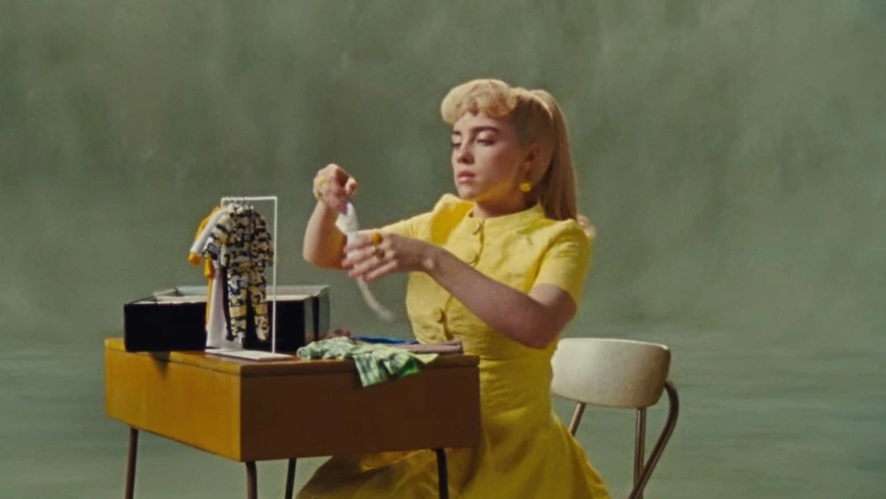

Mmm, mmm
Mmm
I used to float, now I just fall down
I used to know, but I'm not sure now
What I was made for
What was I made for?
Taking a drive, I was an ideal
Looked so alive, turns out, I'm not real
Just something you paid for
What was I made for?
Mmm
'Cause I, I
I don't know how to feel
But I wanna try
I don't know how to feel
But someday I might
Someday I might
Mmm, mmm, ah-mmm
Mmm, mmm, mmm
When did it end? All the enjoyment
I'm sad again, don't tell my boyfriend
It's not what he's made for
What was I made for?
'Cause I, 'cause I
I don't know how to feel
But I wanna try
I don't know how to feel
But someday I might
Someday I might
Think I forgot how to be happy
Something I'm not, but something I can be
Something I wait for
Something I'm made for
Something I'm made for